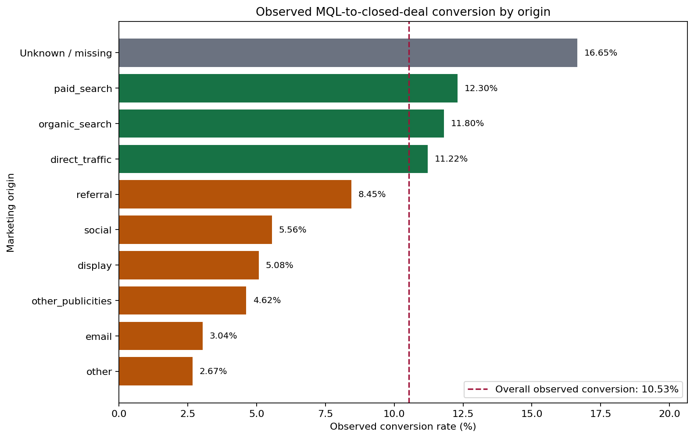

Marketing Funnel and Seller Acquisition Analysis
This Issue #10 report is generated from the committed workbook by scripts/build_marketing_funnel_analysis.py. It replaces the Colab-only workflow with a deterministic repository-owned analysis.
Decision
Use the marketing funnel as supporting evidence, not as the core marketplace growth argument. The MQL-to-deal join is complete, but only 380 of 842 closed sellers (45.13%) appear in marketplace order items. Acquisition origin can therefore be associated with observed outcomes for a limited subset, but it cannot be treated as the cause of those outcomes.
Funnel baseline
| Metric | Result |
|---|---|
| Marketing-qualified leads | 8,000 |
| Closed deals observed | 842 |
| Observed conversion rate | 10.53% |
| Closed deals matched to an MQL | 842 |
| Closed sellers linked to marketplace items | 380 |
| Marketplace linkage coverage | 45.13% |
"Observed conversion" means a matching closed-deal record exists in the dataset. The remaining leads are not observed as won by the dataset snapshot; they are not proven losses.
Conversion by marketing origin

| Origin | MQLs | Observed wins | Not observed as won | Conversion rate |
|---|---|---|---|---|
| organic_search | 2,296 | 271 | 2,025 | 11.80% |
| paid_search | 1,586 | 195 | 1,391 | 12.30% |
| social | 1,350 | 75 | 1,275 | 5.56% |
| Unknown / missing | 1,159 | 193 | 966 | 16.65% |
| direct_traffic | 499 | 56 | 443 | 11.22% |
| 493 | 15 | 478 | 3.04% | |
| referral | 284 | 24 | 260 | 8.45% |
| other | 150 | 4 | 146 | 2.67% |
| display | 118 | 6 | 112 | 5.08% |
| other_publicities | 65 | 3 | 62 | 4.62% |
Among known origins with at least 400 MQLs, the origins at or above the overall rate are organic_search, paid_search, direct_traffic. The below-benchmark diagnostic queue is social, email. This is a queue for investigation, not a budget-allocation recommendation, because spend, acquisition cost, lead quality, and opportunity value are unavailable.
unknown and blank origins are normalized into one Unknown / missing category. It contains 1,159 MQLs and 193 observed wins. Its apparent conversion rate is an attribution-quality signal, not evidence that an unknown channel performs well.
Contact-month context
| First-contact month | MQLs | Observed wins | Conversion rate |
|---|---|---|---|
| 2017-06 | 4 | 0 | 0.00% |
| 2017-07 | 239 | 2 | 0.84% |
| 2017-08 | 386 | 9 | 2.33% |
| 2017-09 | 312 | 7 | 2.24% |
| 2017-10 | 416 | 14 | 3.37% |
| 2017-11 | 445 | 18 | 4.04% |
| 2017-12 | 200 | 11 | 5.50% |
| 2018-01 | 1,141 | 152 | 13.32% |
| 2018-02 | 1,028 | 149 | 14.49% |
| 2018-03 | 1,174 | 167 | 14.22% |
| 2018-04 | 1,352 | 183 | 13.54% |
| 2018-05 | 1,303 | 130 | 9.98% |
Contact-month conversion is descriptive. Later cohorts can have less time to close before the dataset snapshot, so month-to-month changes must not be read as pure marketing-performance changes without a common lead-maturity window.
Landing-page analysis is retained only as an exploratory check. Pages require at least 20 MQLs, leaving 64 pages. The IDs are opaque and multiple comparisons remain noisy, so landing pages are excluded from the final recommendation.
Comparable seller outcomes
The marketplace seller comparison uses the first 30 days after each seller's won_date. A seller is eligible only if all 30 days occur on or before the final item-backed marketplace purchase date, 2018-09-03. The eligibility cutoff is 2018-08-04, leaving 762 closed sellers with equal follow-up and 128 with at least one observed seller-order in that window.
| Origin | Closed | Linked | Eligible | Active in 30d | Activation | Orders per active seller | Product revenue per active seller | Average review | Low-review rate |
|---|---|---|---|---|---|---|---|---|---|
| organic_search | 271 | 113 | 239 | 42 | 17.57% | 2.31 | 266.88 | 4.45 | 10.42% |
| Unknown / missing | 193 | 85 | 183 | 30 | 16.39% | 4.77 | 1,079.66 | 3.78 | 23.53% |
| paid_search | 195 | 101 | 169 | 31 | 18.34% | 5.19 | 638.40 | 4.38 | 8.92% |
| social | 75 | 31 | 68 | 7 | 10.29% | 4.71 | 229.36 | 4.25 | 9.38% |
| direct_traffic | 56 | 31 | 54 | 11 | 20.37% | 1.91 | 170.06 | 4.10 | 10.00% |
| referral | 24 | 9 | 22 | 5 | 22.73% | 2.20 | 775.72 | 4.82 | 0.00% |
| 15 | 6 | 14 | 1 | 7.14% | 6.00 | 148.00 | 4.33 | 16.67% | |
| display | 6 | 2 | 6 | 0 | 0.00% | n/a | n/a | n/a | n/a |
| other | 4 | 2 | 4 | 1 | 25.00% | 19.00 | 1,088.79 | 4.00 | 15.79% |
| other_publicities | 3 | 0 | 3 | 0 | 0.00% | n/a | n/a | n/a | n/a |
Product revenue is the sum of item price and excludes freight. Activation uses all eligible closed sellers as its denominator. Per-seller order and revenue metrics use active sellers as their denominator.
Review metrics use one order-level review rollup joined only to single-seller orders. This keeps the review numerator and denominator at the same reviewed seller-order grain and avoids assigning one multi-seller order review to several sellers. Low review means an order-level average review score of 2 or less.
Limitations
- Only 45.13% of closed sellers link to marketplace items.
- No linked seller has an item-backed marketplace order before
won_date, which supports using that date as the start of the fixed outcome window. - Marketing origin is observational and cannot establish causality.
- The 30-day window improves comparability but captures only early seller outcomes and may miss later activation.
- Multi-seller orders are excluded from review comparisons; order-level reviews cannot be attributed reliably to one seller in those orders.
- Missing/unknown origin represents an attribution problem, not a real channel.
- Funnel dates cover 2017-06-14 to 2018-05-31 for first contact and 2017-12-05 to 2018-11-14 for observed wins.
Recommendation
Use paid, organic, direct, social, and email results to form diagnostic questions for the marketing team. Investigate why high-volume below-benchmark origins have many leads not observed as won, and repair origin attribution before comparing channel efficiency. Do not shift spend from this dataset alone. Keep the final marketplace-growth story centered on orders, delivery, products, sellers, and regions; use this funnel section as acquisition context.
Reproduction and validation
python3 scripts/build_marketing_funnel_analysis.py
python3 scripts/build_live_report_pages.py
python3 scripts/validate_marketing_funnel_analysis.pyThe build command regenerates this report and its PNG chart in docs/eda/. The validation command checks source keys, totals, linkage, bounded rates, equal-window eligibility, single-seller review attribution, report values, and published-page generation.